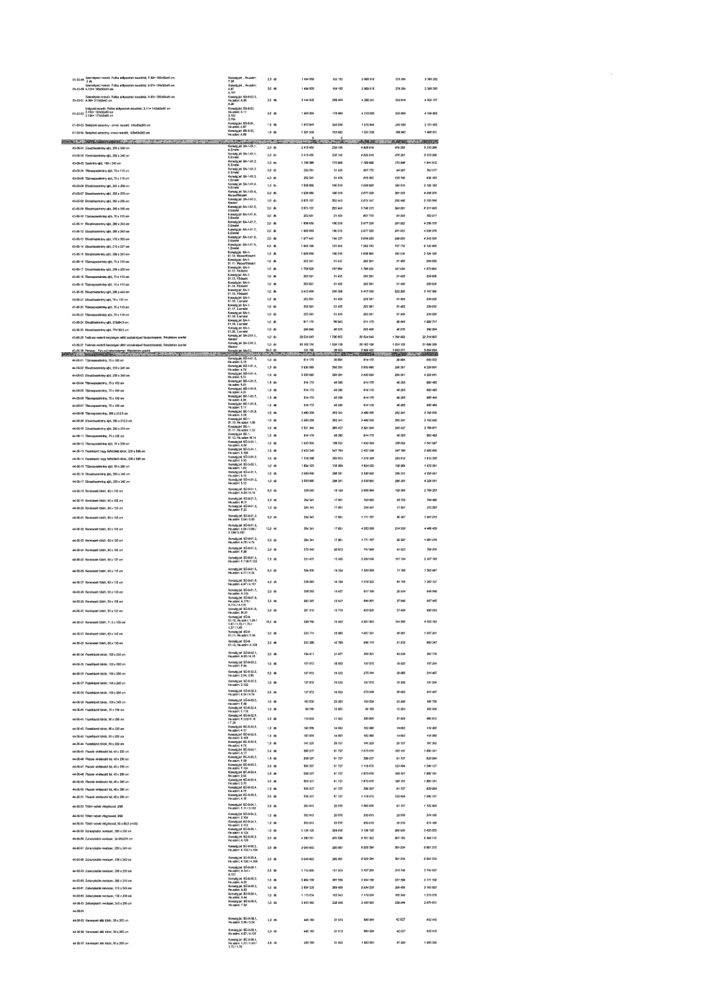

| Tétel | Megjegyzés | Menny. | Egys. | Anyag e.ár (net HUF) | Díj e.ár (net HUF) | Anyag összesen (net HUF) | Díj összesen (net HUF) | Anyag+Díj összesen (net HUF) |
|---|---|---|---|---|---|---|---|---|
| 42-01-09 Személyzeti mosdó: Pultba süllyesztett mosdókagyló, 4.31= 180x52x8,5 cm | Konszig jel: He.szám: 4.31 | 2,0 | db | 1 434 959 | 180 182 | 2 869 918 | 360 364 | 3 230 282 |
| 42-01-10 Személyzeti mosdó: Pultba süllyesztett mosdókagyló, 4.07= 150x52x8,5 cm | Konszig jel: He.szám: 4.07 | 2,0 | db | 1 434 959 | 180 182 | 2 869 918 | 360 364 | 3 230 282 |
| 42-01-11 Személyzeti mosdó: Pultba süllyesztett mosdókagyló, A.58= 210x52x8,5 cm / A.59= 210x52x8,5 cm | Konszig jel: B0-8-12.2, He.szám: A.58, A.59 | 2,0 | db | 2 144 620 | 269 558 | 4 289 241 | 539 116 | 4 828 357 |
| 42-01-12 Dolgozói mosdó: Pultba süllyesztett mosdókagyló, 2.11= 145x55x10 cm / 2.112= 135x55x10 cm / 2.102= 123x55x10 cm | Konszig jel: B0-8-23, He.szám: 2.11, 2.102, 2.112 | 3,0 | db | 1 439 600 | 176 989 | 4 318 800 | 530 968 | 4 849 768 |
| 42-01-13 Beépített szekrény - elnöki mosdó, 143x38x235 cm | Konszig jel: B0-8-21.1, He.szám: A.124 | 1,0 | db | 1 913 948 | 240 508 | 1 913 948 | 240 508 | 2 154 456 |
| 42-01-14 Beépített szekrény - elnöki mosdó, 108x38x235 cm | Konszig jel: B0-8-22.1, He.szám: A.122 | 1,0 | db | 1 501 536 | 188 992 | 1 501 536 | 188 992 | 1 690 531 |
| 43-00-00 ELŐSZOBASZEKRÉNYEK | NaN | NaN | NaN | 0 | 0 | 107 334 330 | 13 252 865 | 120 587 215 |
| 43-00-01 Előszobaszekrény ajtó, 280 x 240 cm | Konszig jel: BA-1-01.1, 4. Emelet | 2,0 | db | 2 418 459 | 288 145 | 4 836 918 | 576 290 | 5 413 208 |
| 43-00-02 Előszobaszekrény ajtó, 280 x 240 cm | Konszig jel: BA-1-01.2, 5. Emelet | 2,0 | db | 2 418 459 | 288 145 | 4 836 918 | 576 290 | 5 413 208 |
| 43-00-03 Szekrény ajtó, 150 x 240 cm | Konszig jel: BA-1-01.3, 5. Emelet | 4,0 | db | 1 785 246 | 173 546 | 7 140 985 | 694 184 | 7 835 170 |
| 43-00-04 Tükörajtó szekrény ajtó, 75 x 110 cm | Konszig jel: BA-1-01.4, 3. Emelet | 2,0 | db | 303 891 | 31 435 | 607 782 | 62 870 | 670 652 |
| 43-00-05 Előszobaszekrény ajtó, 75 x 110 cm | Konszig jel: BA-1-01.5, 4. Emelet | 4,0 | db | 202 591 | 31 435 | 810 362 | 125 740 | 936 103 |
| 43-00-06 Előszobaszekrény ajtó, 207 x 235 cm | Konszig jel: BA-1-01.6, Földszint | 1,0 | db | 1 538 659 | 190 516 | 1 538 659 | 190 516 | 1 729 175 |
| 43-00-07 Előszobaszekrény ajtó, 200 x 235 cm | Konszig jel: BA-1-01.6, Földszint | 2,0 | db | 1 538 659 | 190 516 | 3 077 318 | 381 032 | 3 458 350 |
| 43-00-08 Előszobaszekrény ajtó, 280 x 235 cm | Konszig jel: BA-1-01.7, 1. Emelet | 1,0 | db | 2 873 137 | 282 440 | 2 873 137 | 282 440 | 3 155 577 |
| 43-00-09 Előszobaszekrény ajtó, 280 x 235 cm | Konszig jel: BA-1-01.7, 3. Emelet | 2,0 | db | 2 873 137 | 282 440 | 5 746 275 | 564 881 | 6 311 156 |
| 43-00-10 Tükörajtó szekrény ajtó, 75 x 110 cm | Konszig jel: BA-1-01.10, 2. Emelet | 3,0 | db | 202 591 | 31 435 | 607 772 | 94 305 | 702 077 |
| 43-00-11 Előszobaszekrény ajtó, 200 x 240 cm | Konszig jel: BA-1-01.11, 2. Emelet | 2,0 | db | 1 538 659 | 190 516 | 3 077 318 | 381 032 | 3 458 350 |
| 43-00-12 Előszobaszekrény ajtó, 200 x 240 cm | Konszig jel: BA-1-01.11, 3. Emelet | 2,0 | db | 1 538 659 | 190 516 | 3 077 318 | 381 032 | 3 458 350 |
| 43-00-13 Előszobaszekrény ajtó, 210 x 240 cm | Konszig jel: BA-1-01.12, 1. Emelet | 2,0 | db | 1 577 443 | 194 327 | 3 154 885 | 388 654 | 3 543 539 |
| 43-00-14 Előszobaszekrény ajtó, 210 x 237 cm | Konszig jel: BA-1-01.13, 2. Emelet | 4,0 | db | 1 845 700 | 181 943 | 7 382 799 | 727 772 | 8 110 571 |
| 43-00-15 Előszobaszekrény ajtó, 200 x 240 cm | Konszig jel: BA-1-01.14, 2. Emelet | 1,0 | db | 1 538 659 | 190 516 | 1 538 659 | 190 516 | 1 729 175 |
| 43-00-16 Tükörajtó szekrény ajtó, 75 x 110 cm | Konszig jel: BA-1-01.15, 2. Emelet | 1,0 | db | 202 591 | 31 435 | 202 591 | 31 435 | 234 026 |
| 43-00-17 Előszobaszekrény ajtó, 200 x 235 cm | Konszig jel: BA-1-01.16, Földszint | 1,0 | db | 1 708 629 | 167 054 | 1 708 629 | 167 054 | 1 875 683 |
| 43-00-18 Tükörajtó szekrény ajtó, 75 x 110 cm | Konszig jel: BA-1-01.17, Földszint | 1,0 | db | 202 591 | 31 435 | 202 591 | 31 435 | 234 026 |
| 43-00-19 Tükörajtó szekrény ajtó, 75 x 110 cm | Konszig jel: BA-1-01.18, Földszint | 1,0 | db | 202 591 | 31 435 | 202 591 | 31 435 | 234 026 |
| 43-00-20 Előszobaszekrény ajtó, 200 x 443 cm | Konszig jel: BA-1-01.19, 1. Emelet | 1,0 | db | 3 412 058 | 335 308 | 3 412 058 | 335 308 | 3 747 366 |
| 43-00-21 Tükörajtó szekrény ajtó, 75 x 110 cm | Konszig jel: BA-1-01.20, 1. Emelet | 1,0 | db | 202 591 | 31 435 | 202 591 | 31 435 | 234 026 |
| 43-00-22 Tükörajtó szekrény ajtó, 75 x 110 cm | Konszig jel: BA-1-01.21, 1. Emelet | 1,0 | db | 202 591 | 31 435 | 202 591 | 31 435 | 234 026 |
| 43-00-23 Tükörajtó szekrény ajtó, 75 x 110 cm | Konszig jel: BA-1-01.22, 1. Emelet | 1,0 | db | 202 591 | 31 435 | 202 591 | 31 435 | 234 026 |
| 43-00-24 Előszobaszekrény ajtó, 276/84,5 cm | Konszig jel: BA-1-01.23, 2. Emelet | 1,0 | db | 911 175 | 89 543 | 911 175 | 89 543 | 1 000 717 |
| 43-00-25 Előszobaszekrény ajtó, 77x158,5 cm | Konszig jel: BA-1-01.24, 2. Emelet | 1,0 | db | 299 848 | 46 676 | 299 848 | 46 676 | 346 524 |
| 43-00-26 Tetőtéri vázas elhelyezkedésű előtét szellőzőpanel falburkolatok, Részletterv szerint | Konszig jel: BA-2-01.1, Padlástér | 1,0 | db | 20 524 043 | 1 700 852 | 20 524 043 | 1 700 852 | 22 224 895 |
| 43-00-27 Tetőtéri vázas elhelyezkedésű előtét szellőzőpanel falburkolatok, Részletterv szerint | Konszig jel: BA-2-01.2, Padlástér | 1,0 | db | 20 162 150 | 1 524 120 | 20 162 150 | 1 524 120 | 21 686 270 |
| 44-00-00 TÜKRÖK | NaN | NaN | NaN | 0 | 0 | 148 433 135 | 18 903 078 | 167 336 213 |
| 44-00-01 Előszobaszekrény ajtó, 75 x 110 cm | Konszig jel: B0-1-01.4, He.szám: 3.16 | 1,0 | db | 614 170 | 30 864 | 614 170 | 30 864 | 645 033 |
| 44-00-02 Előszobaszekrény ajtó, 200 x 240 cm | Konszig jel: B0-1-01.6, He.szám: F.02 | 1,0 | db | 3 330 690 | 293 291 | 3 330 690 | 293 291 | 3 623 981 |
| 44-00-03 Előszobaszekrény ajtó, 200 x 240 cm | Konszig jel: B0-1-01.6, He.szám: F.02 | 1,0 | db | 3 330 690 | 293 291 | 3 330 690 | 293 291 | 3 623 981 |
| 44-00-04 Tükörszekrény ajtó, 75 x 100 cm | Konszig jel: B0-1-01.8, He.szám: 2.11 | 1,0 | db | 614 170 | 49 295 | 614 170 | 49 295 | 663 465 |
| 44-00-05 Tükörszekrény ajtó, 75 x 100 cm | Konszig jel: B0-1-01.8, He.szám: 2.102 | 1,0 | db | 614 170 | 49 295 | 614 170 | 49 295 | 663 465 |
| 44-00-06 Tükörszekrény ajtó, 75 x 100 cm | Konszig jel: B0-1-01.7, He.szám: 2.112 | 1,0 | db | 614 170 | 49 295 | 614 170 | 49 295 | 663 465 |
| 44-00-07 Tükörszekrény ajtó, 75 x 100 cm | Konszig jel: B0-1-01.8, He.szám: 2.112 | 1,0 | db | 614 170 | 49 295 | 614 170 | 49 295 | 663 465 |
| 44-00-08 Előszobaszekrény ajtó, 200 x 212,5 cm | Konszig jel: B0-3-17, He.szám: 3.16 | 1,0 | db | 3 480 298 | 262 341 | 3 480 298 | 262 341 | 3 742 639 |
| 44-00-09 Előszobaszekrény ajtó, 200 x 212,5 cm | Konszig jel: B0-3-18, He.szám: 3.16 | 1,0 | db | 3 480 298 | 262 341 | 3 480 298 | 262 341 | 3 742 639 |
| 44-00-10 Előszobaszekrény ajtó, 200 x 210 cm | Konszig jel: B0-3-14, He.szám: 1.22 | 1,0 | db | 3 521 244 | 264 427 | 3 521 244 | 264 427 | 3 785 671 |
| 44-00-11 Előszobaszekrény ajtó, 83 x 200 cm | Konszig jel: B0-3-13, He.szám: 1.24 | 1,0 | db | 854 170 | 48 295 | 854 170 | 48 295 | 902 465 |
| 44-00-12 Fazettázott vágott tükör falon, 225 x 588 cm | Konszig jel: B0-3-21.1, He.szám: F.100 | 1,0 | db | 1 432 064 | 108 023 | 1 432 064 | 108 023 | 1 540 087 |
| 44-00-13 Fazettázott vágott fali tükör tükör, 225 x 588 cm | Konszig jel: B0-3-21.2, He.szám: F.100 | 1,0 | db | 2 432 248 | 547 780 | 2 432 248 | 547 780 | 2 980 028 |
| 44-00-14 Fazettázott vágott fali tükör tükör, 225 x 588 cm | Konszig jel: B0-3-21.3, He.szám: F.100 | 1,0 | db | 1 515 388 | 296 912 | 1 515 388 | 296 912 | 1 812 300 |
| 44-00-15 Tükörszekrény ajtó, 83 x 200 cm | Konszig jel: B0-3-22.1, He.szám: F.16 | 1,0 | db | 1 834 322 | 138 209 | 1 834 322 | 138 209 | 1 972 531 |
| 44-00-16 Előszobaszekrény ajtó, 200 x 240 cm | Konszig jel: B0-4-31, He.szám: 5.15 | 1,0 | db | 3 933 600 | 295 291 | 3 933 600 | 295 291 | 4 228 891 |
| 44-00-17 Előszobaszekrény ajtó, 200 x 240 cm | Konszig jel: B0-4-32, He.szám: 5.15 | 1,0 | db | 3 933 600 | 295 291 | 3 933 600 | 295 291 | 4 228 891 |
| 44-00-18 Keretezett tükör, 60 x 135 cm | Konszig jel: B0-8-01.1, He.szám: A.03/A.15 | 8,0 | db | 325 663 | 15 159 | 2 605 304 | 121 272 | 2 726 576 |
| 44-00-19 Keretezett tükör, 60 x 135 cm | Konszig jel: B0-8-01.2, He.szám: 1.16/1.42 | 2,0 | db | 354 341 | 17 801 | 708 682 | 35 602 | 744 284 |
| 44-00-20 Keretezett tükör, 60 x 135 cm | Konszig jel: B0-8-01.2, He.szám: 2.33 | 1,0 | db | 354 341 | 17 801 | 354 341 | 17 801 | 372 142 |
| 44-00-21 Keretezett tükör, 60 x 135 cm | Konszig jel: B0-8-01.2, He.szám: 3.46 | 5,0 | db | 354 341 | 17 801 | 1 771 705 | 89 005 | 1 860 710 |
